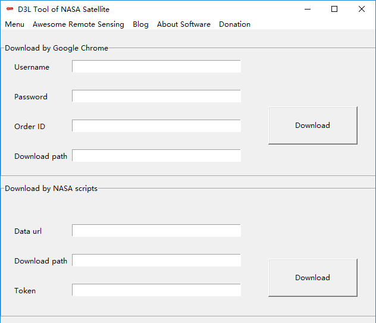

D3L Tool of NASA Satellite User Guide
Mr.Dai is currently working on an updated version of the user guide for D3L Tool of NASA Satellite. The software and user gudie will continue to modify by suggestions.
Main Interface

Dobule Cick the D3LToolNASA.exe.
1 Menu
Click Menu. Offical website is the homepage of D3L Tool of NASA Satellite. The link of Baidu pan provide another download way. The NASA offical website will open the url of nasa satellite: 'https://ladsweb.modaps.eosdis.nasa.gov/' in your browser. The NASA tool provide some tool and service of NASA Satellite.
2 Awesome Remote Sensing
Click Awesome Remote Sensing. A curated list of awesome remote sensing resources.
3 Blog
Click Blog. It will open my blog in you browser.
4 About Software
Click About Softawre. Some informations of software.
5 Donation
Click Donation. Thank you for your Donation.
Download NASA Satellite
1 Google Chrome Browser
First of all, You have installed the google chrome browser in your computer. Then you can use it.
Then, You must have an account of NASA Earthdata. Username and Password was filled by your account.
You can get an ID of your order. The download path used to save the list of data that you download. But it can't depend the path of NASA satellite which were saved. If you want to change the path. Please change options of google chrome browser.
Finally, you should click Download and start your download.

The D3LToolNASA.exe will open the google chrome browser and download the data.
2 NASA Scripts
I have packaged the laads-download-data.py into a exe which called nasa.exe. If you're very familar with Command Line, you can use the nasa.exe and CMD to download NASA Satellite.
First of all, You must have a app-key of NASA Earthdata.
Then, you have to get the url of your orders.
Finally, you should click Download and start your download.

The D3LToolNASAe.exe will download the data